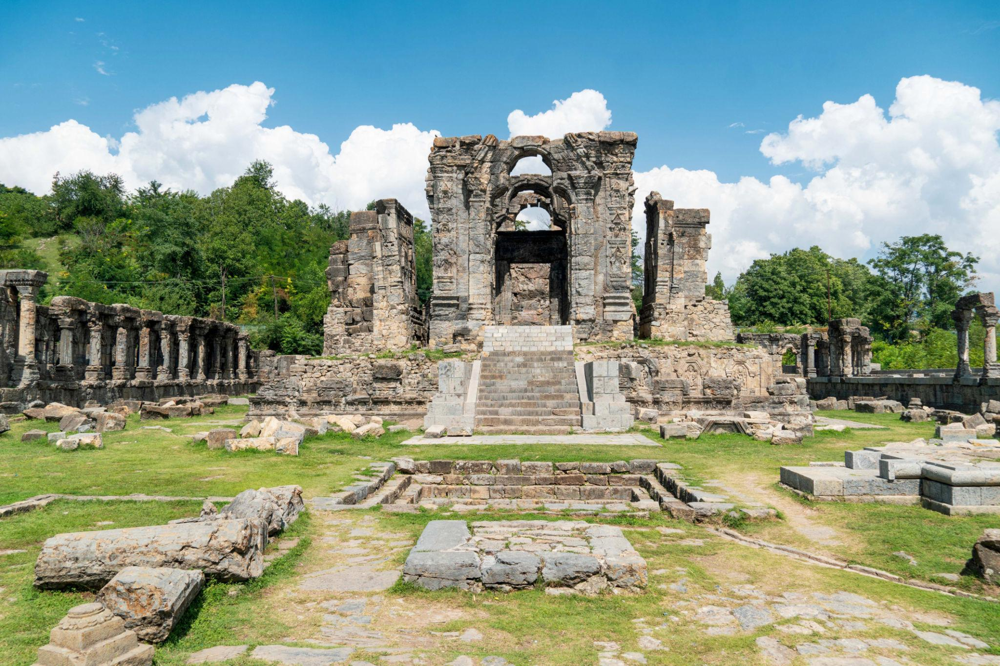
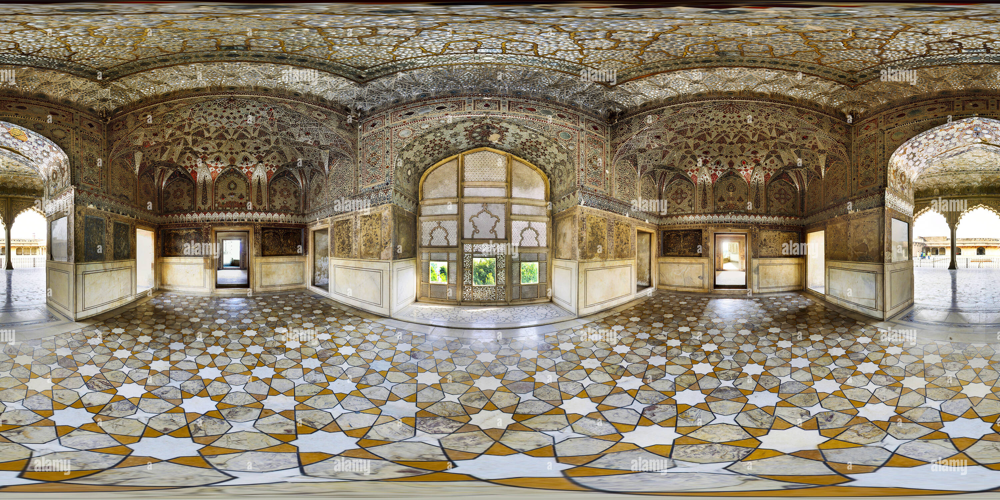
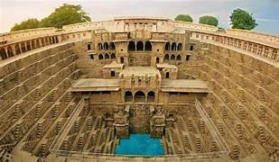
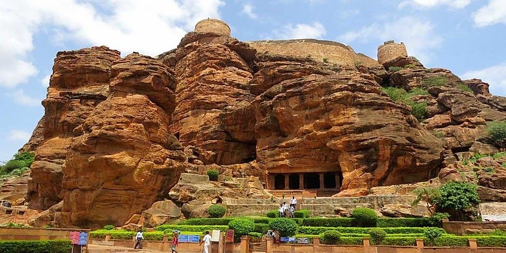
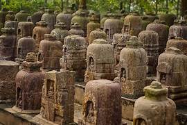
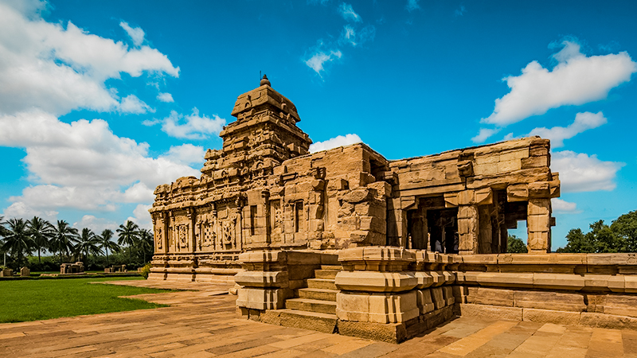
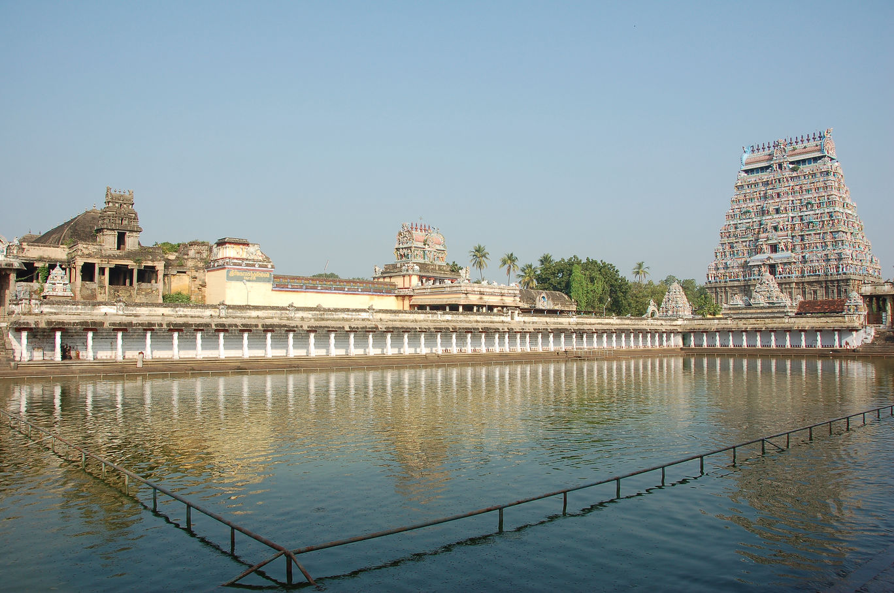

Hidden Heritage of India
From Kashmir to Kanyakumari, every Indian state holds a heritage treasure that deserves recognition.

Martand Sun Temple, Jammu & Kashmir
Built in the 8th century, the Martand Sun Temple once stood as one of the grandest sun temples in India. It was designed so that sunlight illuminated the sanctum throughout the day, reflecting advanced astronomical knowledge of ancient Kashmir.

Kangra Fort, Himachal Pradesh
Kangra Fort is believed to be over 3,500 years old, making it one of the oldest forts in India. It has been mentioned in ancient texts and has witnessed invasions from Alexander’s era to the British rule.

Sheesh Mahal, Punjab
The Sheesh Mahal of Patiala is famous for its intricate mirror work and rare miniature paintings. Once used by Punjabi royalty, the palace reflects how art, music, and luxury flourished in princely Punjab.

Chand Baori, Rajasthan
Chand Baori is one of the deepest stepwells in the world, with over 3,500 perfectly symmetrical steps. Built more than 1,000 years ago, it was designed to store water and keep the surroundings cool in extreme heat.

Dholavira, Gujarat
Dholavira was a highly planned city of the Indus Valley Civilization, featuring reservoirs, drainage systems, and water conservation methods that still impress modern engineers today.

Bhimbetka, Madhya Pradesh
The cave paintings at Bhimbetka are over 30,000 years old and show early humans hunting, dancing, and living together—making it one of the oldest known art galleries in the world.

Ratnagiri, Odisha
Ratnagiri was once a major center of Buddhist learning, attracting monks from across Asia. Excavations have revealed monasteries, stupas, and sculptures that highlight Odisha’s forgotten Buddhist past.

Majuli, Assam
Majuli is the world’s largest river island and a living cultural heritage site. It is home to ancient monasteries, traditional mask-making, and a peaceful way of life shaped by the Brahmaputra.

Pattadakal, Karnataka
Pattadakal is the only place in India where North and South Indian temple styles exist together. It was the ceremonial site where Chalukya kings were crowned, symbolizing architectural unity.

Tharangambadi, Tamil Nadu
Tharangambadi was once a Danish colony, making it one of the few places in India with European fort architecture. The coastal town tells a rare story of cultural exchange between India and Europe.